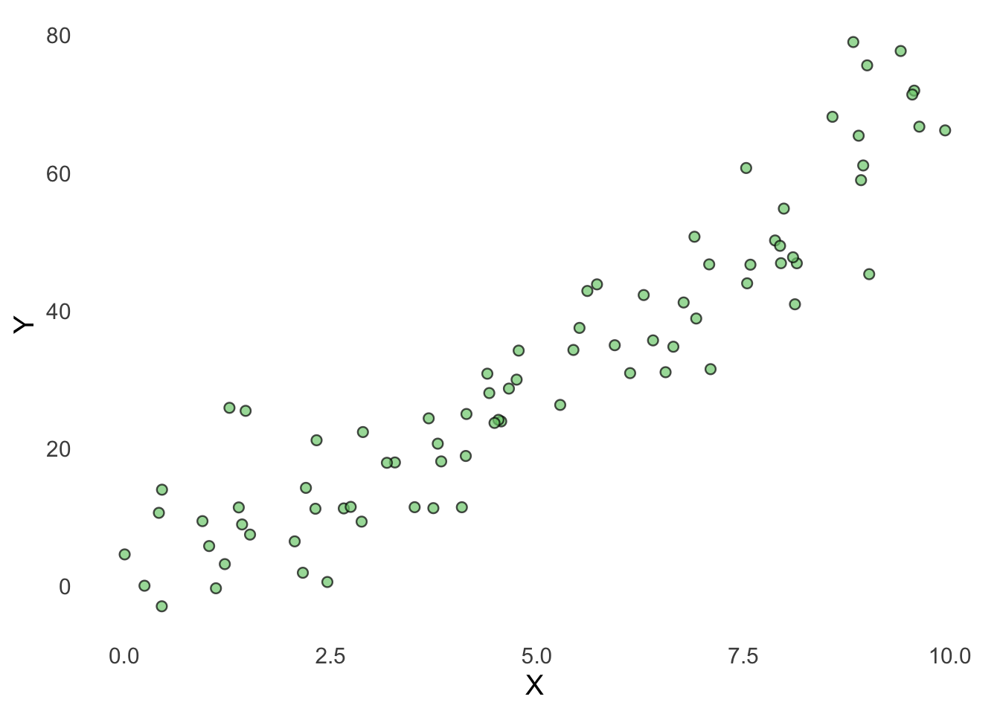
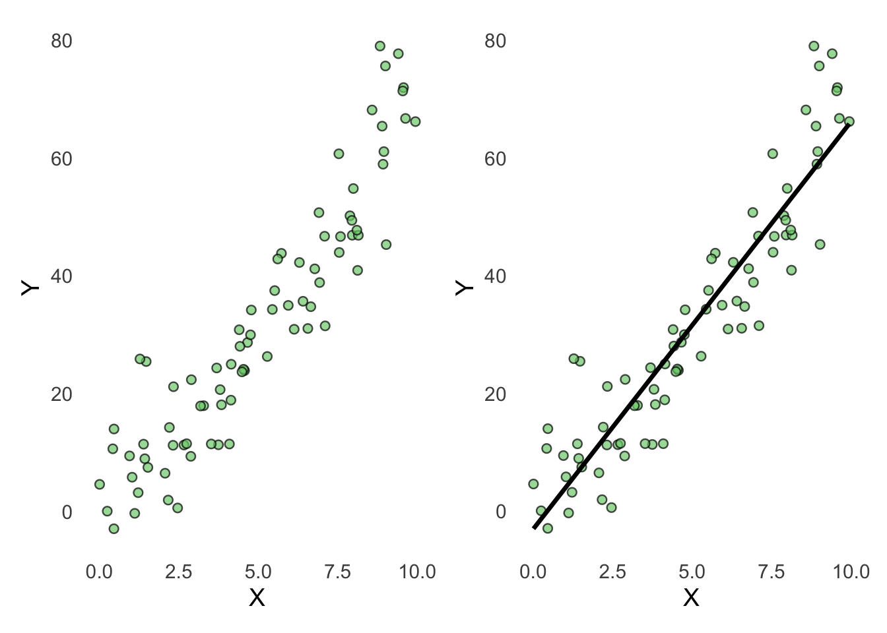

A central idea in this course is that there is some real process that we want to understand. For example, imagine that a company wants to understand what determines how much its customers spend. In reality, customer spending may depend on many factors, such as:
income,
age,
previous purchases,
advertising,
customer preferences,
competitors,
random events,
and many other factors.
Some of these factors can be observed and measured, while others cannot. There are also relationships between these factors. For example, income may have a positive effect on customer spending, while advertising may influence both what customers buy and how much they spend. We call the underlying process that produces the observations in our data the data-generating process (DGP).
7.2 Models
In real business analysis, we usually do not know exactly how the data-generating process works. We observe the data it produces and use these observations to learn about the underlying process.
This is where models become useful. A model is a simplified representation of the data-generating process. It does not need to capture everything that happens in reality. Instead, we use models to focus on the relationships that are most relevant to the question we want to answer.
Models deliberately leave things out. This is not necessarily a weakness — it is what makes models useful. Think about a model airplane used in a wind tunnel. It does not contain every detail of a real airplane, but it can still help us understand important aspects of aerodynamics. Statistical models work in a similar way. Suppose we believe that customer spending is related to income. We might construct a model such as:
\[
Spending = \beta_0 + \beta_1 Income + \varepsilon
\]
This model is clearly much simpler than reality. It says that we will focus on the relationship between income and spending, while everything else that affects spending is, for the moment, left outside the systematic part of the model. Our task is then to use the observed data to estimate the unknown parameters, such as \(\beta_0\) and \(\beta_1\) (we will explain this more extensively later).
7.2.1 Models are useful simplifications
A good model does not need to reproduce reality perfectly. In fact, real-world models almost never do. Instead, we ask whether a model is useful for the purpose we have in mind. Different purposes may require different models. For example, we may want to:
describe what we observe in the data;
predict what will happen for new observations;
classify observations into different groups;
identify clusters or patterns in the data;
estimate relationships between variables;
make statistical inferences about a larger population;
or support business decisions.
This brings us back to one of the most important questions in data analysis: What are we trying to accomplish, and what do we want to know? The appropriate model depends on the answer.
7.3 A simple example
Let’s create some artificial data to represent some data that have been generated by some data-generating process. In this example, the true relationship between x and y is curved, and there is also some random variation in the data.
What we will do is that we will fit a simple linear model to these data. The purpose is to illustrate an important idea: The model is a simplification of the underlying reality.
Focus on the idea, not the code
You do not need to understand or reproduce the code used to generate the artificial data.
# Load packageslibrary(tidyverse)
── Attaching core tidyverse packages ──────────────────────── tidyverse 2.0.0 ──
✔ dplyr 1.2.0 ✔ readr 2.1.5
✔ forcats 1.0.0 ✔ stringr 1.6.0
✔ ggplot2 4.0.2 ✔ tibble 3.3.1
✔ lubridate 1.9.4 ✔ tidyr 1.3.2
✔ purrr 1.2.1
── Conflicts ────────────────────────────────────────── tidyverse_conflicts() ──
✖ dplyr::filter() masks stats::filter()
✖ dplyr::lag() masks stats::lag()
ℹ Use the conflicted package (<http://conflicted.r-lib.org/>) to force all conflicts to become errors
Attaching package: 'scales'
The following object is masked from 'package:purrr':
discard
The following object is masked from 'package:readr':
col_factor
Attaching package: 'rlang'
The following objects are masked from 'package:purrr':
flatten, flatten_chr, flatten_dbl, flatten_int, flatten_lgl,
flatten_raw, invoke, splice
corrplot 0.95 loaded
source("Functions/linear_regression_functions.R")# Make the generated data reproducibleset.seed(123)# Generate artificial datan <-80df <-tibble(x =runif(n, 0, 10),y =5+2* x +0.5* x^2+rnorm(n, mean =0, sd =8))
The points below represent the data produced by our artificial data-generating process.
p1 <-scatterplot( df, x, y,xlab ="X",ylab ="Y")p1

7.4 Fit a simple model
Now imagine that we only observe the data and want to understand the relationship between x and y. We decide to fit a linear regression model. We will study linear regression extensively later in the course. For now, you can simply think of it as a method for finding the straight line that best describes the relationship between x and y. In other words, we try to draw a line that comes as close as possible to the observed data points.
model <-lm(y ~ x, data = df)
We can now visualize the estimated model by adding the regression line to our data:
The model assumes that the relationship between x and y can be represented by a straight line. The model captures part of the pattern, but it does not reproduce the underlying reality perfectly. That is expected.
Models are simplifications. The important question is whether the simplification is useful for what we want to accomplish.
7.5 Compare reality and model
We can place the two figures next to each other:
p1 + p2

This comparison illustrates a central distinction that we will return to throughout the course: the distinction between data and models, and how we can use models to learn from data and better understand the processes that generated it. In this example, we know how the data were generated because we created the reality ourselves. In real business analysis, we normally do not know the true relationship. We only observe the data and use models to learn about the underlying process.
Throughout the course, we will work more deeply with three modelling approaches:
cluster analysis,
linear regression,
logistic regression.
Each provides a different way of simplifying data in order to identify patterns, make predictions, or support decisions.
7.6 The Modeling Process
How do we go from a business problem to a useful analytical model? In this course, we use CRISP-DM — the Cross-Industry Standard Process for Data Mining — as a simple framework for organizing the modeling process.
CRISP-DM divides the process into six phases:
Business Understanding — What problem are we trying to solve? What do we want to know or predict?
Data Understanding — What data do we have? What do the variables represent? Are there obvious patterns or problems?
Data Preparation — Clean, transform, and organize the data so that it can be analyzed.
Modeling — Choose an appropriate method and fit a model to the data.
Evaluation — Assess how well the model works and whether it helps answer the original business question.
Deployment — Use the results, predictions, or model to support decisions or actions.
The process is not strictly linear. For example, while building a model you may discover that a variable needs to be cleaned differently. During evaluation, you may realize that the original business question needs to be refined. You therefore often move back and forth between the different phases.